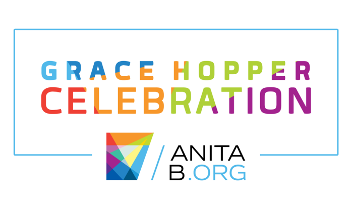

Toggle navigation
C Minor
Home
Profile
Forum
Mentorship
C Minor
Upcoming Events and Highlights

Previous
Next
C Minor is a website created to bring minorities in Computer Science together!
We hope you will find our website useful. :)
Currently a Work in Progress.